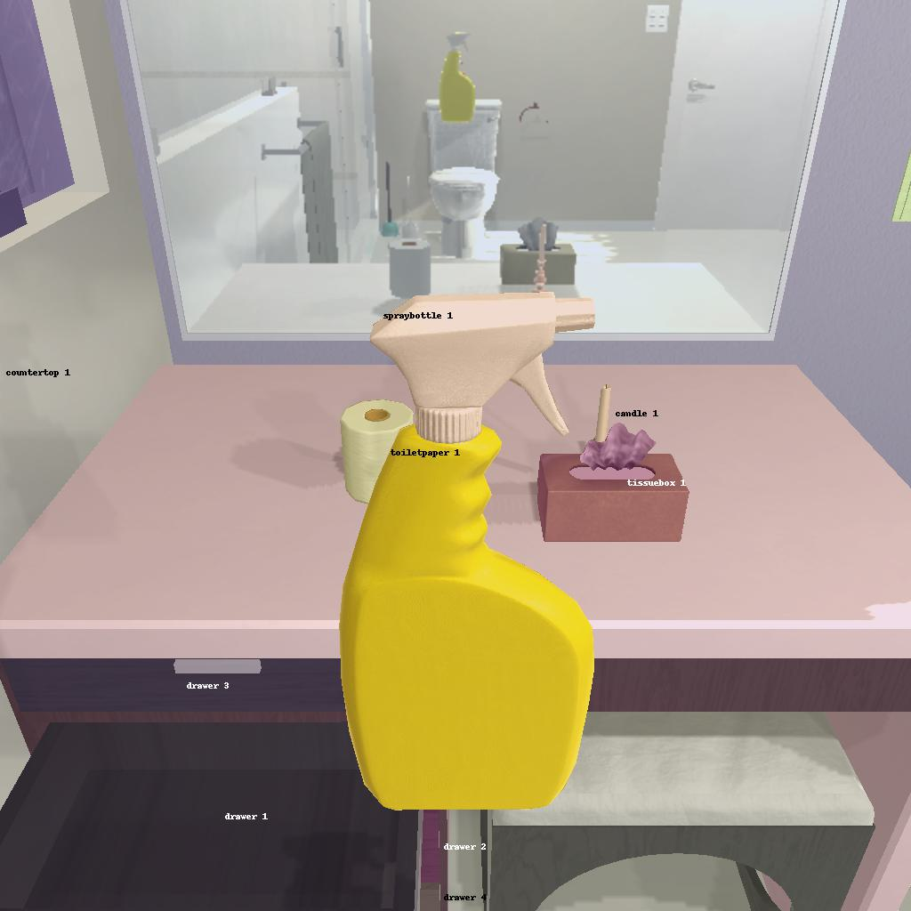

---------------------------------------------------------task: 28---------------------------------------------------------
--------------------------------------------------------------------------------------------------------------------------------------------------------------------
--------------------------------------------------------------------------------------------------------------------------------------------------------------------
Step:--------------------------------------------------------------------------10-------------------------------------------------------------------------------
----------------------------------------
VLM Prompt:
Image1:
**Instruction**
1. Analyze the provided image to identify all visible household objects, focusing on those relevant to the task description "find two spraybottle and put them in toilet."
2. Use the analysis of the image and the task hint "The agent must find an object of the desired type, pick it up, find the correct location to place it, put it down there, then look for another object of the desired type, pick it up, return to previous location, and put it down there with the other object." to answer the question: what is the most reasonable action in the choices for the task description "find two spraybottle and put them in toilet"?
4. Decide and write the answer using the template: The answer is: (i): , where i is the real number. If there is no desired object in the image, search every place based on **Initial Observation** to find the object. And if no one is exactly correct, choose a similar answer.
**Initial Observation**
You are in the middle of a room. Looking quickly around you, you can see bathtub (1), bathtubbasin (1), cart (1), sink (1), garbagecan (1), sinkbasin (1), countertop (1), drawer (1-4), toilet (1), toiletpaperhanger (1)
**Answer Choices**
(1): go to bathtub 1
(2): go to bathtubbasin 1
(3): go to cart 1
(4): go to sink 1
(5): go to garbagecan 1
(6): go to sinkbasin 1
(7): go to countertop 1
(8): go to drawer 1
(9): go to drawer 3
(10): go to drawer 4
(11): go to toilet 1
(12): go to toiletpaperhanger 1
(13): open drawer 2
(14): close drawer 2
(15): put spraybottle 1 in/on drawer 2
(16): examine spraybottle 1
(17): examine drawer 2
**Answer**
Let's think step by step by following the instructions.
----------------------------------------
----------------------------------------
Original Response:
Firstly, we need to identify the spray bottles. In the image provided, we can see one spray bottle labeled "spraybottle 1" on the countertop. However, we need to find two spray bottles according to the task description. Since we can see only one spray bottle in the image, it is most likely that the second spray bottle is located in a drawer or another place not visible in the image.
The most reasonable action would be to first pick up the visible spray bottle and then search for the second one. Since we are instructed to put them in the toilet, we must find both before completing the task. The action choices do not include picking up the spray bottle, so we must choose the next best action, which would be to search for the second spray bottle.
The initial observation mentions a "drawer (1-4)," so it is reasonable to assume the second spray bottle might be in one of the drawers. Since "drawer 1" and "drawer 3" are mentioned in the answer choices and we can see that "drawer 2" is open but empty in the image, it is reasonable to ignore them. Therefore, we should check "drawer 4" that is not visible in the image.
The answer is: (10): go to drawer 4.
----------------------------------------
----------------------------------------
>>> Refine Original VLM Response and Get Pure Action: go to drawer 4
----------------------------------------
-----------------------------------------------------------------
Running time: 17.670939207077026 seconds
Total Money: 10.198950000000009
-----------------------------------------------------------------
-----------------------------------------------------------------
Text Observation:You arrive at loc 10. The drawer 4 is closed.
-----------------------------------------------------------------
UNSUCCEED